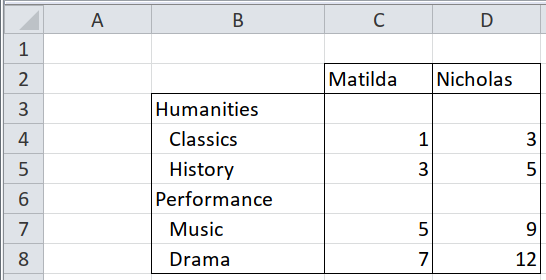

3.2 Complex unpivoting
When behead() isn’t powerful enough (it makes certain assumptions, and it
doesn’t understand formatting), then you can get much more control by using
enhead(), which joins together two separate data frames of data cells and
header cells.
This kind of unpivoting is always done in two stages.
- Identify which cells are headers, and which are data
- State how the data cells relate to the header cells.
3.2.1 Two clear rows of text column headers, left-aligned

The first stage, identifying header vs data cells, is simply filtering.
path <- system.file("extdata", "worked-examples.xlsx", package = "unpivotr")
all_cells <-
xlsx_cells(path, sheets = "pivot-annotations") %>%
dplyr::filter(col >= 4, !is_blank) %>% # Ignore the row headers in this example
select(row, col, data_type, character, numeric) %>%
print()## # A tibble: 22 x 5
## row col data_type character numeric
## <int> <int> <chr> <chr> <dbl>
## 1 2 4 character Female NA
## 2 2 6 character Male NA
## 3 3 4 character Matilda NA
## 4 3 5 character Olivia NA
## 5 3 6 character Nicholas NA
## 6 3 7 character Paul NA
## 7 4 4 numeric <NA> 1
## 8 4 5 numeric <NA> 2
## 9 4 6 numeric <NA> 3
## 10 4 7 numeric <NA> 0
## # ... with 12 more rows## # A tibble: 6 x 5
## `row/col` `4(D)` `5(E)` `6(F)` `7(G)`
## <int> <chr> <chr> <chr> <chr>
## 1 2 Female <NA> Male <NA>
## 2 3 Matilda Olivia Nicholas Paul
## 3 4 1 2 3 0
## 4 5 3 4 5 1
## 5 6 5 6 9 2
## 6 7 7 8 12 3first_header_row <-
dplyr::filter(all_cells, row == 2) %>%
select(row, col, sex = character)
# the title of this header is 'sex'
# the cells are text cells (`"Female"` and `"Male"`) so take the value in the
# '`character` column.
first_header_row## # A tibble: 2 x 3
## row col sex
## <int> <int> <chr>
## 1 2 4 Female
## 2 2 6 Malesecond_header_row <-
dplyr::filter(all_cells, row == 3) %>%
select(row, col, name = character)
# The title of this header is 'name'.
# The cells are text cells, so take the value in the '`character` column.
second_header_row## # A tibble: 4 x 3
## row col name
## <int> <int> <chr>
## 1 3 4 Matilda
## 2 3 5 Olivia
## 3 3 6 Nicholas
## 4 3 7 Pauldata_cells <-
dplyr::filter(all_cells, data_type == "numeric") %>%
select(row, col, score = numeric)
# The data is exam scores in certain subjects, so give the data that title.
# The data is numeric, so select only that 'value'. If some of the data was
# also text or true/false, then you would select the `character` and `logical`
# columns as well as `numeric`The second stage is to declare how the data cells relate to each row of column headers. Unpivotr provides a set of functions for this, derived from the points of the compass.
Starting from the point of view of a data cell, the relevant column header from
the second row of headers is the one directly north (up), or "N".
## # A tibble: 16 x 4
## row col score name
## <int> <int> <dbl> <chr>
## 1 4 4 1 Matilda
## 2 4 5 2 Olivia
## 3 4 6 3 Nicholas
## 4 4 7 0 Paul
## 5 5 4 3 Matilda
## 6 5 5 4 Olivia
## 7 5 6 5 Nicholas
## 8 5 7 1 Paul
## 9 6 4 5 Matilda
## 10 6 5 6 Olivia
## 11 6 6 9 Nicholas
## 12 6 7 2 Paul
## 13 7 4 7 Matilda
## 14 7 5 8 Olivia
## 15 7 6 12 Nicholas
## 16 7 7 3 PaulThe first row of headers, from the point of view of a data cell, is either
directly north (up), or north and west (up and left), or "NNW".
## # A tibble: 16 x 4
## row col score sex
## <int> <int> <dbl> <chr>
## 1 4 4 1 Female
## 2 4 5 2 Female
## 3 5 4 3 Female
## 4 5 5 4 Female
## 5 6 4 5 Female
## 6 6 5 6 Female
## 7 7 4 7 Female
## 8 7 5 8 Female
## 9 4 6 3 Male
## 10 4 7 0 Male
## 11 5 6 5 Male
## 12 5 7 1 Male
## 13 6 6 9 Male
## 14 6 7 2 Male
## 15 7 6 12 Male
## 16 7 7 3 MalePiping everything together, we get a complete, tidy dataset, and can finally
drop the row and col columns.
data_cells %>%
enhead(first_header_row, "NNW") %>%
enhead(second_header_row, "N") %>%
select(-row, -col)## # A tibble: 16 x 3
## score sex name
## <dbl> <chr> <chr>
## 1 1 Female Matilda
## 2 2 Female Olivia
## 3 3 Female Matilda
## 4 4 Female Olivia
## 5 5 Female Matilda
## 6 6 Female Olivia
## 7 7 Female Matilda
## 8 8 Female Olivia
## 9 3 Male Nicholas
## 10 0 Male Paul
## 11 5 Male Nicholas
## 12 1 Male Paul
## 13 9 Male Nicholas
## 14 2 Male Paul
## 15 12 Male Nicholas
## 16 3 Male Paul3.2.2 Two clear columns of text row headers, top-aligned
This is almost the same as Two clear rows of text column headers,
left-aligned, but with different compass directions: "W" for directly
west (left), and "WNW" for west and north (left and up).
("NNW" and "WNW" look like synonyms. They happen to be synonyms in
enhead(), but they aren’t in behead().
In this example, the table has no column headers, only row headers. This is artificial here, but sometimes table are deliberately laid out in transpose form: the first column contains the headers, and the data extends in columns from left to right instead of from top to bottom.
path <- system.file("extdata", "worked-examples.xlsx", package = "unpivotr")
all_cells <-
xlsx_cells(path, sheets = "pivot-annotations") %>%
dplyr::filter(row >= 3, !is_blank) %>% # Ignore the column headers in this example
select(row, col, data_type, character, numeric) %>%
print()## # A tibble: 26 x 5
## row col data_type character numeric
## <int> <int> <chr> <chr> <dbl>
## 1 3 4 character Matilda NA
## 2 3 5 character Olivia NA
## 3 3 6 character Nicholas NA
## 4 3 7 character Paul NA
## 5 4 2 character Humanities NA
## 6 4 3 character Classics NA
## 7 4 4 numeric <NA> 1
## 8 4 5 numeric <NA> 2
## 9 4 6 numeric <NA> 3
## 10 4 7 numeric <NA> 0
## # ... with 16 more rows## # A tibble: 5 x 7
## `row/col` `2(B)` `3(C)` `4(D)` `5(E)` `6(F)` `7(G)`
## <int> <chr> <chr> <chr> <chr> <chr> <chr>
## 1 3 <NA> <NA> Matilda Olivia Nicholas Paul
## 2 4 Humanities Classics 1 2 3 0
## 3 5 <NA> History 3 4 5 1
## 4 6 Performance Music 5 6 9 2
## 5 7 <NA> Drama 7 8 12 3first_header_col <-
dplyr::filter(all_cells, col == 2) %>%
select(row, col, field = character)
# the title of this header is 'field', meaning 'group of subjects'.
# The cells are text cells (`"Humanities"`, `"Performance"`) so take the value
# in the '`character` column.
first_header_col## # A tibble: 2 x 3
## row col field
## <int> <int> <chr>
## 1 4 2 Humanities
## 2 6 2 Performancesecond_header_col <-
dplyr::filter(all_cells, col == 3) %>%
select(row, col, subject = character)
# The title of this header is 'subject'
# The cells are text cells (`"history"`, etc.) so take the value in the
# '`character` column.
second_header_col## # A tibble: 4 x 3
## row col subject
## <int> <int> <chr>
## 1 4 3 Classics
## 2 5 3 History
## 3 6 3 Music
## 4 7 3 Dramadata_cells <-
dplyr::filter(all_cells, data_type == "numeric") %>%
select(row, col, score = numeric)
# The data is examp scores in certain subjects, so give the data that title.
# The data is numeric, so select only that 'value'. If some of the data was
# also text or true/false, then you would select the `character` and `logical`
# columns as well as `numeric`
data_cells %>%
enhead(first_header_col, "WNW") %>%
enhead(second_header_col, "W") %>%
select(-row, -col)## # A tibble: 16 x 3
## score field subject
## <dbl> <chr> <chr>
## 1 1 Humanities Classics
## 2 2 Humanities Classics
## 3 3 Humanities Classics
## 4 0 Humanities Classics
## 5 3 Humanities History
## 6 4 Humanities History
## 7 5 Humanities History
## 8 1 Humanities History
## 9 5 Performance Music
## 10 6 Performance Music
## 11 9 Performance Music
## 12 2 Performance Music
## 13 7 Performance Drama
## 14 8 Performance Drama
## 15 12 Performance Drama
## 16 3 Performance Drama3.2.3 Two clear rows and columns of text headers, top-aligned and left-aligned
This is a combination of the previous two sections. No new techniques are used.
- Identify which cells are headers, and which are data
- State how the data cells relate to the header cells.
path <- system.file("extdata", "worked-examples.xlsx", package = "unpivotr")
all_cells <-
xlsx_cells(path, sheets = "pivot-annotations") %>%
dplyr::filter(!is_blank) %>%
select(row, col, data_type, character, numeric) %>%
print()## # A tibble: 28 x 5
## row col data_type character numeric
## <int> <int> <chr> <chr> <dbl>
## 1 2 4 character Female NA
## 2 2 6 character Male NA
## 3 3 4 character Matilda NA
## 4 3 5 character Olivia NA
## 5 3 6 character Nicholas NA
## 6 3 7 character Paul NA
## 7 4 2 character Humanities NA
## 8 4 3 character Classics NA
## 9 4 4 numeric <NA> 1
## 10 4 5 numeric <NA> 2
## # ... with 18 more rows## # A tibble: 6 x 7
## `row/col` `2(B)` `3(C)` `4(D)` `5(E)` `6(F)` `7(G)`
## <int> <chr> <chr> <chr> <chr> <chr> <chr>
## 1 2 <NA> <NA> Female <NA> Male <NA>
## 2 3 <NA> <NA> Matilda Olivia Nicholas Paul
## 3 4 Humanities Classics 1 2 3 0
## 4 5 <NA> History 3 4 5 1
## 5 6 Performance Music 5 6 9 2
## 6 7 <NA> Drama 7 8 12 3first_header_row <-
dplyr::filter(all_cells, row == 2) %>%
select(row, col, sex = character)
# the title of this header is 'sex'
# the cells are text cells (`"Female"` and `"Male"`) so take the value in the
# '`character` column.
first_header_row## # A tibble: 2 x 3
## row col sex
## <int> <int> <chr>
## 1 2 4 Female
## 2 2 6 Malesecond_header_row <-
dplyr::filter(all_cells, row == 3) %>%
select(row, col, name = character)
# The title of this header is 'name'.
# The cells are text cells, so take the value in the '`character` column.
second_header_row## # A tibble: 4 x 3
## row col name
## <int> <int> <chr>
## 1 3 4 Matilda
## 2 3 5 Olivia
## 3 3 6 Nicholas
## 4 3 7 Paulfirst_header_col <-
dplyr::filter(all_cells, col == 2) %>%
select(row, col, field = character)
# the title of this header is 'field', meaning 'group of subjects'.
# The cells are text cells (`"Humanities"`, `"Performance"`) so take the value
# in the '`character` column.
first_header_col## # A tibble: 2 x 3
## row col field
## <int> <int> <chr>
## 1 4 2 Humanities
## 2 6 2 Performancesecond_header_col <-
dplyr::filter(all_cells, col == 3) %>%
select(row, col, subject = character)
# The title of this header is 'subject'
# The cells are text cells (`"history"`, etc.) so take the value in the
# '`character` column.
second_header_col## # A tibble: 4 x 3
## row col subject
## <int> <int> <chr>
## 1 4 3 Classics
## 2 5 3 History
## 3 6 3 Music
## 4 7 3 Dramadata_cells <-
dplyr::filter(all_cells, data_type == "numeric") %>%
select(row, col, score = numeric)
# The data is examp scores in certain subjects, so give the data that title.
# The data is numeric, so select only that 'value'. If some of the data was
# also text or true/false, then you would select the `character` and `logical`
# columns as well as `numeric`
data_cells %>%
enhead(first_header_row, "NNW") %>%
enhead(second_header_row, "N") %>%
enhead(first_header_col, "WNW") %>%
enhead(second_header_col, "W") %>%
select(-row, -col)## # A tibble: 16 x 5
## score sex name field subject
## <dbl> <chr> <chr> <chr> <chr>
## 1 1 Female Matilda Humanities Classics
## 2 2 Female Olivia Humanities Classics
## 3 3 Female Matilda Humanities History
## 4 4 Female Olivia Humanities History
## 5 3 Male Nicholas Humanities Classics
## 6 0 Male Paul Humanities Classics
## 7 5 Male Nicholas Humanities History
## 8 1 Male Paul Humanities History
## 9 5 Female Matilda Performance Music
## 10 6 Female Olivia Performance Music
## 11 7 Female Matilda Performance Drama
## 12 8 Female Olivia Performance Drama
## 13 9 Male Nicholas Performance Music
## 14 2 Male Paul Performance Music
## 15 12 Male Nicholas Performance Drama
## 16 3 Male Paul Performance Drama3.2.4 Centre-aligned headers

Headers aren’t always aligned to one side of the data cells that they describe.
path <- system.file("extdata", "worked-examples.xlsx", package = "unpivotr")
all_cells <- xlsx_cells(path, sheets = "pivot-centre-aligned")
rectify(all_cells)## # A tibble: 10 x 10
## `row/col` `2(B)` `3(C)` `4(D)` `5(E)` `6(F)` `7(G)` `8(H)` `9(I)`
## <int> <chr> <chr> <chr> <chr> <chr> <chr> <chr> <chr>
## 1 2 <NA> <NA> <NA> Female <NA> <NA> <NA> Male
## 2 3 <NA> <NA> Leah Matil… Olivia Lenny Max Nichol…
## 3 4 <NA> Classics 3 1 2 4 3 3
## 4 5 Humaniti… History 8 3 4 7 5 5
## 5 6 <NA> Literat… 1 1 9 3 12 7
## 6 7 <NA> Philoso… 5 10 10 8 2 5
## 7 8 <NA> Languag… 5 4 5 9 8 3
## 8 9 <NA> Music 4 10 10 2 4 5
## 9 10 Performa… Dance 4 5 6 4 12 9
## 10 11 <NA> Drama 2 7 8 6 1 12
## # ... with 1 more variable: `10(J)` <chr>Looking at that table, it’s not immediately obvious where the boundary between
Female and Male falls, or between Humanities and Performance. A naive
approach would be to match the inner headers to the outer ones by proximity, and
there are four directions to do so: "ABOVE", "LEFT", "BELOW", and
"RIGHT".
But in this case, those directions are too naive.
Languagesis closest to thePerformanceheader, but is a humanity.Lennyis the same distance fromFemaleas fromMale.
You can fix this by justifying the header cells towards one side of the data
cells that they describe, and then use a direction like "NNW" as usual. Do
this with justify(), providing the header cells with a second set of cells
at the positions you want the header cells to move to.
header_cellsis the cells whose value will be used as the headercorner_cellsis the cells whose position is in one corner of the domain of the header (e.g. the top-left-hand corner).
In the original spreadsheet, the borders mark the boundaries. So the corner cells of the headers can be found by filtering for cells with a particular border.
all_cells <-
xlsx_cells(path, sheets = "pivot-centre-aligned") %>%
select(row, col, is_blank, data_type, character, numeric, local_format_id)
formats <- xlsx_formats(path)
top_borders <- which(!is.na(formats$local$border$top$style))
left_borders <- which(!is.na(formats$local$border$left$style))
first_header_row_corners <-
dplyr::filter(all_cells, row == 2, local_format_id %in% left_borders) %>%
select(row, col)
first_header_row_corners## # A tibble: 2 x 2
## row col
## <int> <int>
## 1 2 4
## 2 2 7first_header_col_corners <-
dplyr::filter(all_cells, col == 2, local_format_id %in% top_borders) %>%
select(row, col)
first_header_col_corners## # A tibble: 2 x 2
## row col
## <int> <int>
## 1 4 2
## 2 9 2Next, get the first row and first column of header cells as usual.
first_header_row <-
dplyr::filter(all_cells, !is_blank, row == 2) %>%
select(row, col, sex = character)
# the title of this header is 'sex'
# the cells are text cells (`"Female"` and `"Male"`) so take the value in the
# '`character` column.
first_header_row## # A tibble: 2 x 3
## row col sex
## <int> <int> <chr>
## 1 2 5 Female
## 2 2 9 Malefirst_header_col <-
dplyr::filter(all_cells, !is_blank, col == 2) %>%
select(row, col, field = character)
# the title of this header is 'field', meaning 'group of subjects'.
# The cells are text cells (`"Humanities"`, `"Performance"`) so take the value
# in the '`character` column.
first_header_col## # A tibble: 2 x 3
## row col field
## <int> <int> <chr>
## 1 5 2 Humanities
## 2 10 2 PerformanceAnd now justify the header cells to the same positions as the corner cells.
first_header_row <- justify(first_header_row, first_header_row_corners)
first_header_col <- justify(first_header_col, first_header_col_corners)
first_header_row## # A tibble: 2 x 3
## row col sex
## <int> <int> <chr>
## 1 2 4 Female
## 2 2 7 Male## # A tibble: 2 x 3
## row col field
## <int> <int> <chr>
## 1 4 2 Humanities
## 2 9 2 PerformanceThe rest of this example is the same as “Two clear rows and columns of text headers, top-aligned and left-aligned”.
second_header_row <-
dplyr::filter(all_cells, row == 3) %>%
select(row, col, name = character)
# The title of this header is 'name'.
# The cells are text cells, so take the value in the '`character` column.
second_header_row## # A tibble: 7 x 3
## row col name
## <int> <int> <chr>
## 1 3 4 Leah
## 2 3 5 Matilda
## 3 3 6 Olivia
## 4 3 7 Lenny
## 5 3 8 Max
## 6 3 9 Nicholas
## 7 3 10 Paulsecond_header_col <-
dplyr::filter(all_cells, col == 3) %>%
select(row, col, subject = character)
# The title of this header is 'subject'
# The cells are text cells (`"history"`, etc.) so take the value in the
# '`character` column.
second_header_col## # A tibble: 8 x 3
## row col subject
## <int> <int> <chr>
## 1 4 3 Classics
## 2 5 3 History
## 3 6 3 Literature
## 4 7 3 Philosophy
## 5 8 3 Languages
## 6 9 3 Music
## 7 10 3 Dance
## 8 11 3 Dramadata_cells <-
dplyr::filter(all_cells, data_type == "numeric") %>%
select(row, col, score = numeric)
# The data is examp scores in certain subjects, so give the data that title.
# The data is numeric, so select only that 'value'. If some of the data was
# also text or true/false, then you would select the `character` and `logical`
# columns as well as `numeric`
data_cells %>%
enhead(first_header_row, "NNW") %>%
enhead(second_header_row, "N") %>%
enhead(first_header_col, "WNW") %>%
enhead(second_header_col, "W") %>%
select(-row, -col)## # A tibble: 56 x 5
## score sex name field subject
## <dbl> <chr> <chr> <chr> <chr>
## 1 3 Female Leah Humanities Classics
## 2 1 Female Matilda Humanities Classics
## 3 2 Female Olivia Humanities Classics
## 4 8 Female Leah Humanities History
## 5 3 Female Matilda Humanities History
## 6 4 Female Olivia Humanities History
## 7 1 Female Leah Humanities Literature
## 8 1 Female Matilda Humanities Literature
## 9 9 Female Olivia Humanities Literature
## 10 5 Female Leah Humanities Philosophy
## # ... with 46 more rows3.2.5 Multiple rows or columns of headers, with meaningful formatting
This is a combination of the previous section with Meaningfully formatted cells. The section Meaningfully formatted rows doesn’t work here, because the unpivoting of multiple rows/columns of headers complicates the relationship between the data and the formatting.
- Unpivot the multiple rows/columns of headers, as above, but keep the
rowandcolof each data cell. - Collect the
row,coland formatting of each data cell. - Join the data to the formatting by the
rowandcol.
path <- system.file("extdata", "worked-examples.xlsx", package = "unpivotr")
all_cells <-
xlsx_cells(path, sheets = "pivot-annotations") %>%
dplyr::filter(!is_blank) %>%
select(row, col, data_type, character, numeric) %>%
print()## # A tibble: 28 x 5
## row col data_type character numeric
## <int> <int> <chr> <chr> <dbl>
## 1 2 4 character Female NA
## 2 2 6 character Male NA
## 3 3 4 character Matilda NA
## 4 3 5 character Olivia NA
## 5 3 6 character Nicholas NA
## 6 3 7 character Paul NA
## 7 4 2 character Humanities NA
## 8 4 3 character Classics NA
## 9 4 4 numeric <NA> 1
## 10 4 5 numeric <NA> 2
## # ... with 18 more rows## # A tibble: 6 x 7
## `row/col` `2(B)` `3(C)` `4(D)` `5(E)` `6(F)` `7(G)`
## <int> <chr> <chr> <chr> <chr> <chr> <chr>
## 1 2 <NA> <NA> Female <NA> Male <NA>
## 2 3 <NA> <NA> Matilda Olivia Nicholas Paul
## 3 4 Humanities Classics 1 2 3 0
## 4 5 <NA> History 3 4 5 1
## 5 6 Performance Music 5 6 9 2
## 6 7 <NA> Drama 7 8 12 3first_header_row <-
dplyr::filter(all_cells, row == 2) %>%
select(row, col, sex = character)
# the title of this header is 'sex'
# the cells are text cells (`"Female"` and `"Male"`) so take the value in the
# '`character` column.
first_header_row## # A tibble: 2 x 3
## row col sex
## <int> <int> <chr>
## 1 2 4 Female
## 2 2 6 Malesecond_header_row <-
dplyr::filter(all_cells, row == 3) %>%
select(row, col, name = character)
# The title of this header is 'name'.
# The cells are text cells, so take the value in the '`character` column.
second_header_row## # A tibble: 4 x 3
## row col name
## <int> <int> <chr>
## 1 3 4 Matilda
## 2 3 5 Olivia
## 3 3 6 Nicholas
## 4 3 7 Paulfirst_header_col <-
dplyr::filter(all_cells, col == 2) %>%
select(row, col, field = character)
# the title of this header is 'field', meaning 'group of subjects'.
# The cells are text cells (`"Humanities"`, `"Performance"`) so take the value
# in the '`character` column.
first_header_col## # A tibble: 2 x 3
## row col field
## <int> <int> <chr>
## 1 4 2 Humanities
## 2 6 2 Performancesecond_header_col <-
dplyr::filter(all_cells, col == 3) %>%
select(row, col, subject = character)
# The title of this header is 'subject'
# The cells are text cells (`"history"`, etc.) so take the value in the
# '`character` column.
second_header_col## # A tibble: 4 x 3
## row col subject
## <int> <int> <chr>
## 1 4 3 Classics
## 2 5 3 History
## 3 6 3 Music
## 4 7 3 Dramadata_cells <-
dplyr::filter(all_cells, data_type == "numeric") %>%
select(row, col, score = numeric)
# The data is exam scores in certain subjects, so give the data that title.
# The data is numeric, so select only that 'value'. If some of the data was
# also text or true/false, then you would select the `character` and `logical`
# columns as well as `numeric`
unpivoted <-
data_cells %>%
enhead(first_header_row, "NNW") %>%
enhead(second_header_row, "N") %>%
enhead(first_header_col, "WNW") %>%
enhead(second_header_col, "W")
# Don't delet the `row` and `col` columns yet, because we need them to join on
# the formatting
# `formats` is a pallette of fill colours that can be indexed by the
# `local_format_id` of a given cell to get the fill colour of that cell
fill_colours <- xlsx_formats(path)$local$fill$patternFill$fgColor$rgb
# Import all the cells, filter out the header row, filter for the first column,
# and create a new column `approximate` based on the fill colours, by looking up
# the local_format_id of each cell in the `formats` pallette.
annotations <-
xlsx_cells(path, sheets = "pivot-annotations") %>%
dplyr::filter(row >= 4, col >= 4) %>% # Omit the headers
mutate(fill_colour = fill_colours[local_format_id]) %>%
select(row, col, fill_colour)
annotations## # A tibble: 16 x 3
## row col fill_colour
## <int> <int> <chr>
## 1 4 4 <NA>
## 2 4 5 FFFFFF00
## 3 4 6 <NA>
## 4 4 7 <NA>
## 5 5 4 FFFFFF00
## 6 5 5 <NA>
## 7 5 6 <NA>
## 8 5 7 <NA>
## 9 6 4 <NA>
## 10 6 5 <NA>
## 11 6 6 <NA>
## 12 6 7 <NA>
## 13 7 4 <NA>
## 14 7 5 <NA>
## 15 7 6 FFFFFF00
## 16 7 7 <NA>## # A tibble: 16 x 6
## score sex name field subject fill_colour
## <dbl> <chr> <chr> <chr> <chr> <chr>
## 1 1 Female Matilda Humanities Classics <NA>
## 2 2 Female Olivia Humanities Classics FFFFFF00
## 3 3 Female Matilda Humanities History FFFFFF00
## 4 4 Female Olivia Humanities History <NA>
## 5 3 Male Nicholas Humanities Classics <NA>
## 6 0 Male Paul Humanities Classics <NA>
## 7 5 Male Nicholas Humanities History <NA>
## 8 1 Male Paul Humanities History <NA>
## 9 5 Female Matilda Performance Music <NA>
## 10 6 Female Olivia Performance Music <NA>
## 11 7 Female Matilda Performance Drama <NA>
## 12 8 Female Olivia Performance Drama <NA>
## 13 9 Male Nicholas Performance Music <NA>
## 14 2 Male Paul Performance Music <NA>
## 15 12 Male Nicholas Performance Drama FFFFFF00
## 16 3 Male Paul Performance Drama <NA>3.2.6 Mixed headers and notes in the same row/column, distinguished by formatting

This doesn’t use any new techniques. The trick is, when selecting a row or column of header cells, to filter out ones that have the ‘wrong’ formatting (formatting that shows they aren’t really headers). In this example, cells with italic or red text aren’t headers, even if they are in amongst header cells.
First, identify the IDs of formats that have italic or red text.
path <- system.file("extdata", "worked-examples.xlsx", package = "unpivotr")
formats <- xlsx_formats(path)
italic <- which(formats$local$font$italic)
# For 'red' we can either look for the RGB code for red "FFFF0000"
red <- which(formats$local$font$color$rgb == "FFFF0000")
red## [1] 12 13 14 40 41# Or we can find out what that code is by starting from a cell that we know is
# red.
red_cell_format_id <-
xlsx_cells(path, sheets = "pivot-notes") %>%
dplyr::filter(row == 5, col == 2) %>%
pull(local_format_id)
red_cell_format_id## [1] 40red_rgb <- formats$local$font$color$rgb[red_cell_format_id]
red <- which(formats$local$font$color$rgb == red_rgb)
red## [1] 12 13 14 40 41Now we select the headers, filtering out cells with the format IDs of red or italic cells.
all_cells <-
xlsx_cells(path, sheets = "pivot-notes") %>%
dplyr::filter(!is_blank) %>%
select(row, col, character, numeric, local_format_id) %>%
print()## # A tibble: 31 x 5
## row col character numeric local_format_id
## <int> <int> <chr> <dbl> <int>
## 1 2 4 Female NA 18
## 2 2 6 Male NA 18
## 3 2 7 0 = absent NA 39
## 4 3 4 Matilda NA 20
## 5 3 5 Olivia NA 21
## 6 3 6 Nicholas NA 20
## 7 3 7 Paul NA 21
## 8 4 2 Humanities NA 18
## 9 4 3 Classics NA 19
## 10 4 4 <NA> 1 33
## # ... with 21 more rowsfirst_header_row <-
dplyr::filter(all_cells, row == 2, !(local_format_id %in% c(red, italic))) %>%
select(row, col, sex = character)
# the title of this header is 'sex'
# the cells are text cells (`"Female"` and `"Male"`) so take the value in the
# '`character` column.
first_header_row## # A tibble: 2 x 3
## row col sex
## <int> <int> <chr>
## 1 2 4 Female
## 2 2 6 Malefirst_header_col <-
dplyr::filter(all_cells, col == 2, !(local_format_id %in% c(red, italic))) %>%
select(row, col, qualification = character)
# the title of this header is 'field', meaning 'group of subjects'.
# The cells are text cells (`"Humanities"`, `"Performance"`) so take the value
# in the '`character` column.
first_header_col## # A tibble: 2 x 3
## row col qualification
## <int> <int> <chr>
## 1 4 2 Humanities
## 2 6 2 Performancesecond_header_col <-
dplyr::filter(all_cells, col == 3) %>%
select(row, col, subject = character)
# The title of this header is 'subject'
# The cells are text cells (`"history"`, etc.) so take the value in the
# '`character` column.
data_cells %>%
enhead(first_header_row, "NNW") %>%
enhead(first_header_col, "WNW") %>%
select(-row, -col)## # A tibble: 16 x 3
## score sex qualification
## <dbl> <chr> <chr>
## 1 1 Female Humanities
## 2 2 Female Humanities
## 3 3 Female Humanities
## 4 4 Female Humanities
## 5 3 Male Humanities
## 6 0 Male Humanities
## 7 5 Male Humanities
## 8 1 Male Humanities
## 9 5 Female Performance
## 10 6 Female Performance
## 11 7 Female Performance
## 12 8 Female Performance
## 13 9 Male Performance
## 14 2 Male Performance
## 15 12 Male Performance
## 16 3 Male Performance3.2.7 Mixed levels of headers in the same row/column, distinguished by formatting

Normally different levels of headers are in different rows, or different columns, like Two clear rows of text column headers, left-aligned. But sometimes they coexist in the same row or column, and are distinguishable by formatting, e.g. bold for the top level, italic for the mid level, and plain for the lowest level.
In this example, there is a single column of row headers, where the levels are shown by different amounts of indentation. The indentation is done by formatting, rather than by leading spaces or tabs.
The first step is to find the format IDs of all the different levels of indentation.
path <- system.file("extdata", "worked-examples.xlsx", package = "unpivotr")
formats <- xlsx_formats(path)
indent0 <- which(formats$local$alignment$indent == 0)
indent1 <- which(formats$local$alignment$indent == 1)
indent0## [1] 1 2 3 4 5 6 7 8 9 10 11 12 13 14 15 16 17 18 19 20 21 22 23
## [24] 24 25 26 27 28 29 30 31 32 33 34 35 36 37 38 39 40 41 42 43 45 47 48
## [47] 49 50 51 52 53 54 55 56 57 58 59## [1] 44 46Now we use these format IDs to indentify the different levels of headers in the first column.
all_cells <-
xlsx_cells(path, sheets = "pivot-hierarchy") %>%
dplyr::filter(!is_blank) %>%
select(row, col, data_type, character, numeric, local_format_id) %>%
print()## # A tibble: 16 x 6
## row col data_type character numeric local_format_id
## <int> <int> <chr> <chr> <dbl> <int>
## 1 2 3 character Matilda NA 18
## 2 2 4 character Nicholas NA 42
## 3 3 2 character Humanities NA 18
## 4 4 2 character Classics NA 44
## 5 4 3 numeric <NA> 1 20
## 6 4 4 numeric <NA> 3 45
## 7 5 2 character History NA 44
## 8 5 3 numeric <NA> 3 20
## 9 5 4 numeric <NA> 5 45
## 10 6 2 character Performance NA 20
## 11 7 2 character Music NA 44
## 12 7 3 numeric <NA> 5 20
## 13 7 4 numeric <NA> 9 45
## 14 8 2 character Drama NA 46
## 15 8 3 numeric <NA> 7 24
## 16 8 4 numeric <NA> 12 47field <-
dplyr::filter(all_cells, col == 2, local_format_id %in% indent0) %>%
select(row, col, field = character)
# the title of this header is 'field', meaning 'group of subjects'.
# The cells are text cells (`"Humanities"`, `"Performance"`) so take the value
# in the '`character` column.
field## # A tibble: 2 x 3
## row col field
## <int> <int> <chr>
## 1 3 2 Humanities
## 2 6 2 Performancesubject <-
dplyr::filter(all_cells, col == 2, local_format_id %in% indent1) %>%
select(row, col, subject = character)
# The title of this header is 'subject'
# The cells are text cells (`"history"`, etc.) so take the value in the
# '`character` column.
subject## # A tibble: 4 x 3
## row col subject
## <int> <int> <chr>
## 1 4 2 Classics
## 2 5 2 History
## 3 7 2 Music
## 4 8 2 Dramaname <-
dplyr::filter(all_cells, row == 2) %>%
select(row, col, name = character)
# The title of this header is 'name'.
# The cells are text cells, so take the value in the '`character` column.
name## # A tibble: 2 x 3
## row col name
## <int> <int> <chr>
## 1 2 3 Matilda
## 2 2 4 Nicholasdata_cells <-
dplyr::filter(all_cells, data_type == "numeric") %>%
select(row, col, score = numeric)
# The data is exam scores in certain subjects, so give the data that title.
# The data is numeric, so select only that 'value'. If some of the data was
# also text or true/false, then you would select the `character` and `logical`
# columns as well as `numeric`
data_cells %>%
enhead(field, "WNW") %>%
enhead(subject, "W") %>%
enhead(name, "N") %>%
select(-row, -col)## # A tibble: 8 x 4
## score field subject name
## <dbl> <chr> <chr> <chr>
## 1 1 Humanities Classics Matilda
## 2 3 Humanities Classics Nicholas
## 3 3 Humanities History Matilda
## 4 5 Humanities History Nicholas
## 5 5 Performance Music Matilda
## 6 9 Performance Music Nicholas
## 7 7 Performance Drama Matilda
## 8 12 Performance Drama Nicholas3.2.8 Repeated rows/columns of headers within the table

Repetitions can simply be ignored. Select one of the sets of headers, and use
it for all the data. In this example, the data cells are easy to distinguish
from the headers mixed in among them, because only the data cells have the
numeric data type.
path <- system.file("extdata", "worked-examples.xlsx", package = "unpivotr")
all_cells <-
xlsx_cells(path, sheets = "pivot-repeated-headers") %>%
dplyr::filter(!is_blank) %>%
select(row, col, data_type, character, numeric) %>%
print()## # A tibble: 80 x 5
## row col data_type character numeric
## <int> <int> <chr> <chr> <dbl>
## 1 2 4 character Term 1 NA
## 2 2 5 character Term 2 NA
## 3 2 6 character Term 3 NA
## 4 3 2 character Classics NA
## 5 3 3 character Matilda NA
## 6 3 4 numeric <NA> 1
## 7 3 5 numeric <NA> 8
## 8 3 6 numeric <NA> 7
## 9 4 3 character Nicholas NA
## 10 4 4 numeric <NA> 3
## # ... with 70 more rows## # A tibble: 20 x 6
## `row/col` `2(B)` `3(C)` `4(D)` `5(E)` `6(F)`
## <int> <chr> <chr> <chr> <chr> <chr>
## 1 2 <NA> <NA> Term 1 Term 2 Term 3
## 2 3 Classics Matilda 1 8 7
## 3 4 <NA> Nicholas 3 1 2
## 4 5 <NA> Olivia 4 0 1
## 5 6 <NA> Paul 2 4 8
## 6 7 <NA> <NA> Term 1 Term 2 Term 3
## 7 8 History Matilda 4 7 3
## 8 9 <NA> Nicholas 3 5 5
## 9 10 <NA> Olivia 9 8 5
## 10 11 <NA> Paul 6 2 0
## 11 12 <NA> <NA> Term 1 Term 2 Term 3
## 12 13 Music Matilda 2 9 9
## 13 14 <NA> Nicholas 1 7 7
## 14 15 <NA> Olivia 0 3 5
## 15 16 <NA> Paul 2 2 3
## 16 17 <NA> <NA> Term 1 Term 2 Term 3
## 17 18 Drama Matilda 9 8 9
## 18 19 <NA> Nicholas 1 3 4
## 19 20 <NA> Olivia 6 1 4
## 20 21 <NA> Paul 6 0 2# The 'term' headers appear four times, but only the first one is needed.
term <-
dplyr::filter(all_cells, row == 2) %>%
select(row, col, term = character)
# the title of this header is 'field', meaning 'group of subjects'.
# The cells are text cells (`"Humanities"`, `"Performance"`) so take the value
# in the '`character` column.
term## # A tibble: 3 x 3
## row col term
## <int> <int> <chr>
## 1 2 4 Term 1
## 2 2 5 Term 2
## 3 2 6 Term 3subject <-
dplyr::filter(all_cells, col == 2) %>%
select(row, col, subject = character)
# The title of this header is 'subject'
# The cells are text cells (`"history"`, etc.) so take the value in the
# '`character` column.
subject## # A tibble: 4 x 3
## row col subject
## <int> <int> <chr>
## 1 3 2 Classics
## 2 8 2 History
## 3 13 2 Music
## 4 18 2 Dramaname <-
dplyr::filter(all_cells, col == 3) %>%
select(row, col, name = character)
# The title of this header is 'name'.
# The cells are text cells, so take the value in the '`character` column.
name## # A tibble: 16 x 3
## row col name
## <int> <int> <chr>
## 1 3 3 Matilda
## 2 4 3 Nicholas
## 3 5 3 Olivia
## 4 6 3 Paul
## 5 8 3 Matilda
## 6 9 3 Nicholas
## 7 10 3 Olivia
## 8 11 3 Paul
## 9 13 3 Matilda
## 10 14 3 Nicholas
## 11 15 3 Olivia
## 12 16 3 Paul
## 13 18 3 Matilda
## 14 19 3 Nicholas
## 15 20 3 Olivia
## 16 21 3 Paul# The data cells are distinguished from the 'term' headers by their data type --
# the data cells are numeric, whereas the term headers are character.
data_cells <-
dplyr::filter(all_cells, data_type == "numeric") %>%
select(row, col, score = numeric)
# The data is exam scores in certain subjects, so give the data that title.
# The data is numeric, so select only that 'value'. If some of the data was
# also text or true/false, then you would select the `character` and `logical`
# columns as well as `numeric`
data_cells## # A tibble: 48 x 3
## row col score
## <int> <int> <dbl>
## 1 3 4 1
## 2 3 5 8
## 3 3 6 7
## 4 4 4 3
## 5 4 5 1
## 6 4 6 2
## 7 5 4 4
## 8 5 5 0
## 9 5 6 1
## 10 6 4 2
## # ... with 38 more rowsdata_cells %>%
enhead(term, "N") %>%
enhead(subject, "NNW") %>%
enhead(name, "W") %>%
select(-row, -col)## # A tibble: 48 x 4
## score term subject name
## <dbl> <chr> <chr> <chr>
## 1 1 Term 1 Classics Matilda
## 2 8 Term 2 Classics Matilda
## 3 7 Term 3 Classics Matilda
## 4 3 Term 1 Classics Nicholas
## 5 1 Term 2 Classics Nicholas
## 6 2 Term 3 Classics Nicholas
## 7 4 Term 1 Classics Olivia
## 8 0 Term 2 Classics Olivia
## 9 1 Term 3 Classics Olivia
## 10 2 Term 1 Classics Paul
## # ... with 38 more rows3.2.9 Headers amongst the data

This happens when what is actually a row-header, instead of being presented to the left of the data, is presented above the data. (Alternatively, what is actually a column header, instead of being presented above the data, is presented to the side.)
The way to handle it is to pretend that it is a row header, and use the
"WNW" direction as normal.
path <- system.file("extdata", "worked-examples.xlsx", package = "unpivotr")
all_cells <-
xlsx_cells(path, sheets = "pivot-header-within-data") %>%
dplyr::filter(!is_blank) %>%
select(row, col, data_type, character, numeric, local_format_id) %>%
print()## # A tibble: 80 x 6
## row col data_type character numeric local_format_id
## <int> <int> <chr> <chr> <dbl> <int>
## 1 2 3 character Classics NA 2
## 2 3 3 character Term 1 NA 20
## 3 3 4 character Term 2 NA 37
## 4 3 5 character Term 3 NA 21
## 5 4 2 character Matilda NA 18
## 6 4 3 numeric <NA> 4 18
## 7 4 4 numeric <NA> 0 27
## 8 4 5 numeric <NA> 7 19
## 9 5 2 character Nicholas NA 20
## 10 5 3 numeric <NA> 4 20
## # ... with 70 more rows## # A tibble: 24 x 5
## `row/col` `2(B)` `3(C)` `4(D)` `5(E)`
## <int> <chr> <chr> <chr> <chr>
## 1 2 <NA> Classics <NA> <NA>
## 2 3 <NA> Term 1 Term 2 Term 3
## 3 4 Matilda 4 0 7
## 4 5 Nicholas 4 6 2
## 5 6 Olivia 9 9 9
## 6 7 Paul 5 0 0
## 7 8 <NA> History <NA> <NA>
## 8 9 <NA> Term 1 Term 2 Term 3
## 9 10 Matilda 0 4 2
## 10 11 Nicholas 2 5 2
## # ... with 14 more rowsbold <- which(xlsx_formats(path)$local$font$bold)
# The subject headers, though mixed with the data and the 'term' headers, are
# distinguishable by the data type "character" and by being bold.
subject <-
dplyr::filter(all_cells,
col == 3,
data_type == "character",
local_format_id %in% bold) %>%
select(row, col, subject = character)
# The title of this header is 'subject'
# The cells are text cells (`"history"`, etc.) so take the value in the
# '`character` column.
subject## # A tibble: 4 x 3
## row col subject
## <int> <int> <chr>
## 1 2 3 Classics
## 2 8 3 History
## 3 14 3 Music
## 4 20 3 Drama# We only need one set of the 'term' headers
term <-
dplyr::filter(all_cells, row == 3, data_type == "character") %>%
select(row, col, term = character)
# the title of this header is 'field', meaning 'group of subjects'.
# The cells are text cells (`"Humanities"`, `"Performance"`) so take the value
# in the '`character` column.
term## # A tibble: 3 x 3
## row col term
## <int> <int> <chr>
## 1 3 3 Term 1
## 2 3 4 Term 2
## 3 3 5 Term 3name <-
dplyr::filter(all_cells, col == 2) %>%
select(row, col, name = character)
# The title of this header is 'name'.
# The cells are text cells, so take the value in the '`character` column.
name## # A tibble: 16 x 3
## row col name
## <int> <int> <chr>
## 1 4 2 Matilda
## 2 5 2 Nicholas
## 3 6 2 Olivia
## 4 7 2 Paul
## 5 10 2 Matilda
## 6 11 2 Nicholas
## 7 12 2 Olivia
## 8 13 2 Paul
## 9 16 2 Matilda
## 10 17 2 Nicholas
## 11 18 2 Olivia
## 12 19 2 Paul
## 13 22 2 Matilda
## 14 23 2 Nicholas
## 15 24 2 Olivia
## 16 25 2 Paul# The data cells are distinguished from the 'subject' headers by their data
# type -- the data cells are numeric, whereas the term headers are character.
data_cells <-
dplyr::filter(all_cells, data_type == "numeric") %>%
select(row, col, score = numeric)
# The data is exam scores in certain subjects, so give the data that title.
# The data is numeric, so select only that 'value'. If some of the data was
# also text or true/false, then you would select the `character` and `logical`
# columns as well as `numeric`
data_cells## # A tibble: 48 x 3
## row col score
## <int> <int> <dbl>
## 1 4 3 4
## 2 4 4 0
## 3 4 5 7
## 4 5 3 4
## 5 5 4 6
## 6 5 5 2
## 7 6 3 9
## 8 6 4 9
## 9 6 5 9
## 10 7 3 5
## # ... with 38 more rowsdata_cells %>%
enhead(subject, "WNW") %>%
enhead(term, "N") %>%
enhead(name, "W") %>%
select(-row, -col)## # A tibble: 48 x 4
## score subject term name
## <dbl> <chr> <chr> <chr>
## 1 4 Classics Term 1 Matilda
## 2 0 Classics Term 2 Matilda
## 3 7 Classics Term 3 Matilda
## 4 4 Classics Term 1 Nicholas
## 5 6 Classics Term 2 Nicholas
## 6 2 Classics Term 3 Nicholas
## 7 9 Classics Term 1 Olivia
## 8 9 Classics Term 2 Olivia
## 9 9 Classics Term 3 Olivia
## 10 5 Classics Term 1 Paul
## # ... with 38 more rows